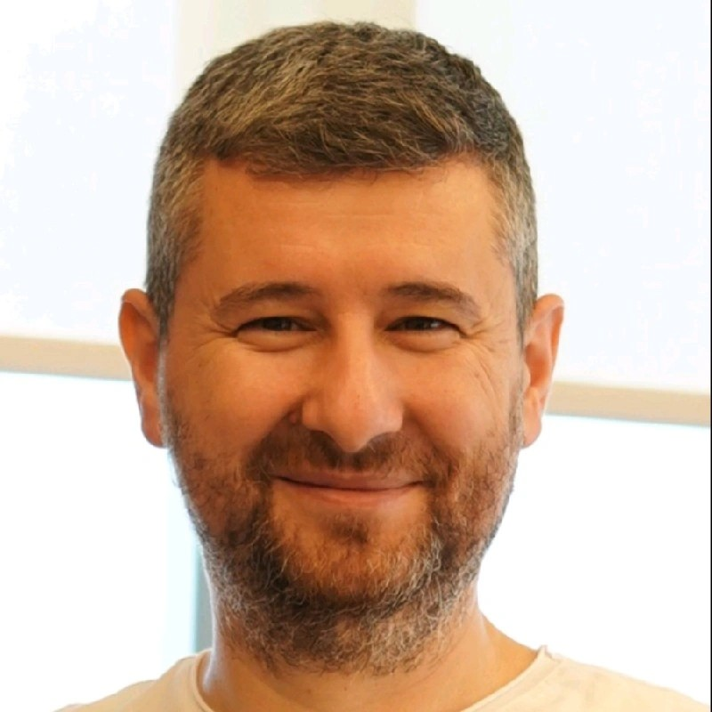

Cisco | Ara 2023
Ağ güvenliği temelleri ve kurumsal altyapı standartları hakkında temel yetkinlik sağlar.
Önlisans, Bilgisayar Programcılığı
2022 – 2024 | Not Ort: 3.0 / 4.0
Lise Diploması
1994 – 1996
Teknik dokümantasyon okuma/yazmada yüksek yetkinlik. B2B iletişim için konuşma becerilerini aktif olarak geliştiriyor.
Yazılım Mimarisi, BT Altyapısı ve IoT çözümlerinde 18 yılı aşkın deneyime sahip sonuç odaklı bir Teknoloji Yöneticisiyim. Son 3 yıldır, özellikle "Safecall" gibi araca özel donanım ve acil çağrı sistemleri geliştiren bir IoT firmasında teknolojik süreçlere ve AR-GE faaliyetlerine liderlik etmekteyim.
Bu süreçteki gerçek dünya IoT projelerinde; uç nokta endüstriyel ağ cihazlarının (routerlar, ağ geçitleri vb.) donanım entegrasyonu, temel konfigürasyonu ve saha devreye alma operasyonlarını koordine ettim.
18 yıllık bu derin teknik arka planımı Üst Düzey Teknoloji Yöneticiliği ve BT Strateji Liderliği rollerinde kurumsal bir değere dönüştürmeyi hedefliyorum. Yıllarca büyük projelerde teknoloji yatırımlarını ve satın alma süreçlerini bizzat yönettiğim için, kurumların operasyonel ve ticari olarak tam neye ihtiyaç duyduğunu çok iyi analiz edebiliyorum. Sektörel ağ (network) tecrübemi, siber güvenlik vizyonumu ve iş odaklı teknoloji liderliğimi çalıştığım kuruma stratejik bir büyüme gücü olarak katmaya hazırım.
Güçlü yazılım mimarileri tasarlayarak SQL Server ve PostgreSQL veritabanlarını yönetti. Python ve C# programlama dillerini kullanarak yüksek güvenlikli ve performanslı kurumsal çözümler geliştirdi.
Geniş ölçekli B2B ve B2C e-ticaret yazılım projelerini yönetti. Karmaşık teknolojik yapıları basit, ticari ve iş odaklı bir dille ifade ederek teknik ekipler ile şirket yöneticileri arasında güçlü bir iletişim köprüsü kurdu.